IoT-Based Smart Agricultural Drying System Agricultural Drying Monitoring and Control System Using ESP32-CAM and Java Web
Latest recorded system status:
1Introduction
Vietnamese Agricultural Products – Quality Risks Begin During the Drying Process.
Drying is a critical post-harvest process that directly affects the quality and preservation of agricultural products such as rice, corn, coffee, pepper, and cashew nuts. However, many farmers and small-scale warehouse operators in Vietnam still rely on manual methods to monitor weather conditions and protect their products. They must regularly check the weather, close protective roofs when it rains, and reopen them when sunlight returns. Unexpected rainfall can increase moisture levels, cause mold growth, reduce product quality, and lead to significant economic losses.
The IoT-Based Smart Agricultural Drying System is developed to address these challenges by applying Internet of Things (IoT) technology to agricultural drying management. The system uses an ESP32-CAM microcontroller connected to environmental sensors to monitor real-time conditions, including temperature, humidity, rainfall, and light intensity.
Sensor data is transmitted to a Java Web application through HTTP communication, allowing users to monitor environmental conditions and system operations remotely. Based on predefined control rules, the system can automatically close the protective roof when rainfall is detected or when environmental conditions become unsuitable for drying. When conditions are favorable, the roof can be reopened automatically. A servo motor is used to control the roof mechanism.
In addition to automatic operation, the web application provides a centralized interface for monitoring sensor readings, managing drying batches, reviewing operation history, and manually controlling the roof when necessary. The system aims to reduce manual intervention, minimize weather-related risks, improve drying efficiency, and support the digital transformation of small-scale agricultural operations.
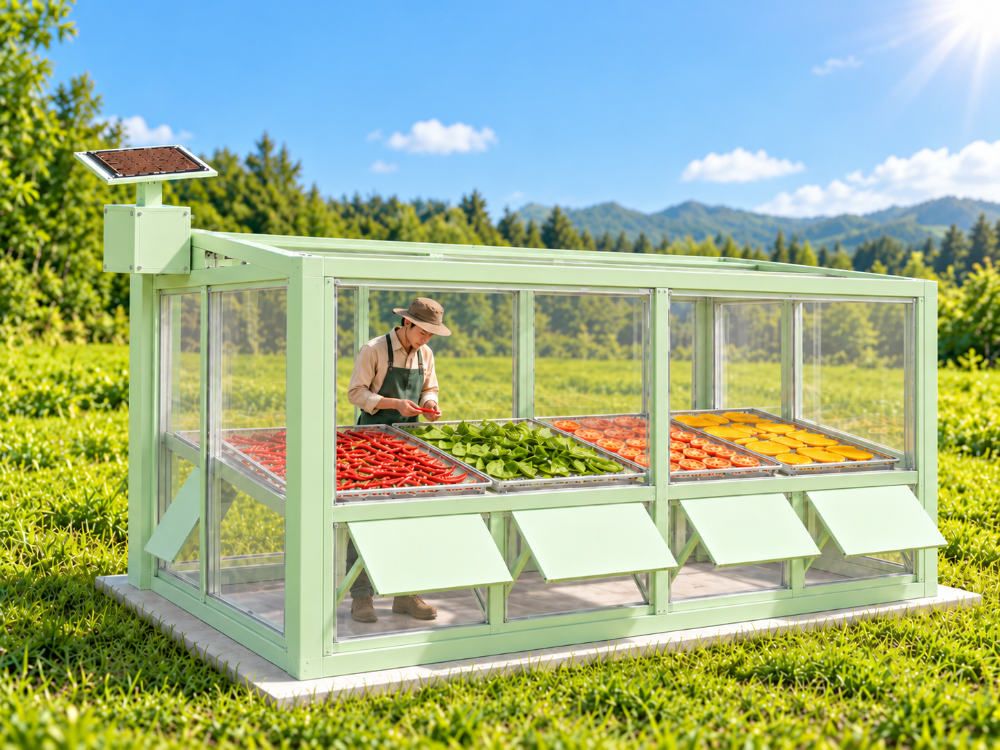
2Problem Statement
In agricultural production, sun drying is an essential post-harvest process. However, traditional drying methods still depend heavily on manual labor and continuous human supervision. This approach presents several operational limitations and risks:
- Unpredictable Weather Conditions: Sudden rainfall or changes in light conditions, especially when it becomes dark, require operators to respond quickly and protect agricultural products. Delayed responses may expose products to moisture, resulting in mold growth, reduced quality, and economic losses.
- Limited Monitoring and Quality Traceability: Environmental parameters such as temperature, humidity, rainfall status, and light conditions are often not recorded continuously or automatically. The lack of historical data makes it difficult to evaluate the drying conditions of individual drying batches.
- Challenges in Centralized Management: As agricultural operations expand across multiple warehouses or drying areas, manually monitoring devices and managing user permissions become increasingly complex and prone to operational errors.
- Device Connectivity Risks: When a data collection device loses its connection without a proper status monitoring mechanism, operators may fail to identify system abnormalities or interruptions in a timely manner.
3Objectives
3.1. General Objective
To design and develop an IoT-based smart agricultural drying system that enables environmental monitoring, automated and manual roof control, and centralized management of agricultural drying processes through a Java Web application.
3.2. Specific Objectives
Environmental Monitoring
Collect temperature, humidity, rainfall status, and light conditions from environmental sensors. Display the collected data on the web dashboard with near real-time updates.Automatic Roof Control
Implement an AUTO control algorithm that automatically closes the protective roof when rainfall is detected or when it becomes dark. The roof automatically opens when conditions are dry and sufficiently bright.Manual Control
Allow authorized operators to switch to MANUAL mode and send OPEN/CLOSE commands through the web interface to control the protective roof.Centralized Management
Manage users, warehouses, devices, and drying batches through a centralized web application. Implement role-based access control (RBAC) with three roles: ADMIN, MANAGER, and OPERATOR.Monitoring & Traceability
Store historical sensor readings, device status records, and control event logs to support data retrieval, operational tracking, and evaluation of drying processes.4Scope
This project focuses on developing and testing a prototype-scale smart agricultural drying system to evaluate its capabilities in environmental monitoring, roof control, and agricultural drying process management.
4.1. In Scope
Hardware & IoT
- ESP32-CAM as the central IoT controller.
- DHT11 sensor for temperature and humidity measurement.
- Rain sensor for rainfall detection.
- LDR sensor for detecting bright and dark conditions.
- Servo motor for simulating roof opening and closing.
Network & Communication
- Communication between the ESP32-CAM and Java Web Server.
- Data transmission and reception via HTTP/HTTPS.
- RESTful API-based communication.
- Online/Offline status monitoring based on heartbeat signals or last-seen timestamps.
Software & Database
- Java Web technologies: JSP, Servlet, JDBC, and JavaScript.
- Application Server: Apache Tomcat 9.
- Database: Microsoft SQL Server.
- Dashboard for monitoring environmental conditions and roof status.
- Support for AUTO/MANUAL modes and OPEN/CLOSE roof commands.
Management & Traceability
- Role-based access control for ADMIN, MANAGER, and OPERATOR.
- User and drying warehouse management.
- IoT device and drying batch management.
- Storage of sensor history and event logs.
- Retrieval and review of system operation history.
4.2. Out of Scope
- The system does not include ventilation fans, thermal drying equipment, or automatic heating systems.
- Artificial Intelligence (AI) and Machine Learning (ML) are not implemented to predict agricultural product moisture levels or optimal drying duration.
- Native mobile application development is excluded; the project focuses only on a responsive web application.
- MQTT protocols and intermediate IoT brokers are not implemented.
- Large-scale agricultural deployment involving multiple physical IoT devices operating simultaneously is not included in the current project scope.
- Advanced weather forecasting and long-term big data analytics are not integrated.
5Expected Outcomes
Upon completion of the prototype, the project is expected to achieve the following technical and operational outcomes:
5.1. Automated Response
The system is expected to operate reliably in AUTO mode by automatically closing the protective roof when rainfall is detected or when it becomes dark, and reopening it when conditions are dry and sufficiently bright.5.2. Real-Time Dashboard
The web dashboard is expected to display temperature, humidity, rainfall status, light conditions, roof status, AUTO/MANUAL control mode, and device Online/Offline connection status.5.3. Remote Manual Control
Authorized MANAGER and OPERATOR accounts are expected to switch the system to MANUAL mode and send OPEN/CLOSE commands from the web interface to the ESP32-CAM, enabling low-latency servo motor control.5.4. Centralized Traceability
The system is expected to provide centralized management of users, warehouses, devices, and drying batches. Sensor history and event logs will be stored to support data retrieval, operational traceability, and report generation when the corresponding functionality is available.5.5. Improved System Awareness
The system is expected to support the detection of device disconnections, sudden rainfall, and environmental parameters exceeding predefined thresholds through warnings and event logs, reducing the need for continuous manual monitoring.6Requirement Analysis
This section defines the main requirements of the Smart Agricultural Drying System, including functional requirements for different user roles and IoT devices, non-functional requirements, and the actors that interact with the system.
6.1 Functional Requirements
The system's functionalities are categorized based on user roles and the responsibilities of the IoT device.
Admin
| ID | Functional Requirement | Priority |
|---|---|---|
| FR-A01 | Log in to and log out of the system. | High |
| FR-A02 | View an overview of the total number of users, warehouses, devices, and drying batches on the Admin Dashboard. | Medium |
| FR-A03 | Manage user accounts, including creating, updating, activating, and deactivating accounts. | High |
| FR-A04 | Manage warehouses, including adding, updating, and changing their operational status. | High |
| FR-A05 | Manage IoT devices and assign devices to specific warehouses. | High |
| FR-A06 | Monitor the Online/Offline status of registered IoT devices. | Medium |
| FR-A07 | View event logs and monitor overall system activities. | Medium |
Manager
| ID | Functional Requirement | Priority |
|---|---|---|
| FR-M01 | View and select warehouses within the manager's assigned access permissions. | High |
| FR-M02 | Monitor temperature, humidity, rainfall status, and light conditions in near real time. | High |
| FR-M03 | Monitor roof status, AUTO/MANUAL control mode, and the Online/Offline status of IoT devices. | High |
| FR-M04 | Switch between AUTO and MANUAL control modes. | High |
| FR-M05 | Send OPEN/CLOSE commands to control the protective roof in MANUAL mode. | High |
| FR-M06 | Create new drying batches in authorized warehouses. | Medium |
| FR-M07 | Monitor active drying batches and mark them as completed when the drying process finishes. | Medium |
| FR-M08 | View sensor history and event logs of assigned warehouses. | Medium |
| FR-M09 | View user and warehouse information within the manager's authorized scope. | Medium |
Operator
| ID | Functional Requirement | Priority |
|---|---|---|
| FR-O01 | Monitor the warehouse assigned to the operator's account. | High |
| FR-O02 | Monitor temperature, humidity, rainfall, light conditions, roof status, and device connection status. | High |
| FR-O03 | Switch between AUTO and MANUAL modes and control the protective roof when MANUAL mode is enabled. | High |
| FR-O04 | Create new drying batches and monitor currently active batches. | Medium |
| FR-O05 | Mark a drying batch as completed when the drying process has finished. | Medium |
| FR-O06 | View sensor history and event logs associated with the assigned warehouse. | Medium |
ESP32-CAM / IoT Device
| ID | Functional Requirement | Priority |
|---|---|---|
| FR-I01 | Connect to a Wi-Fi network and communicate with the Java Web Server using HTTP. | High |
| FR-I02 | Read temperature and humidity measurements from the DHT11 sensor. | High |
| FR-I03 | Detect rainfall status using the rain sensor and bright/dark conditions using the LDR sensor. | High |
| FR-I04 | Automatically control the servo motor according to predefined AUTO control rules. | High |
| FR-I05 | Receive control mode settings and roof commands from the server for MANUAL operation. | High |
| FR-I06 |
Send environmental sensor data
to the /api/sensor endpoint.
|
High |
| FR-I07 |
Send heartbeat signals and report roof status
through the /api/device-state endpoint.
|
High |
| FR-I08 | Transmit data immediately when significant changes are detected and periodically record sensor data for historical tracking. | Medium |
6.2 Non-functional Requirements
| ID | Requirement | Description |
|---|---|---|
| NFR-01 | Real-time Monitoring | The dashboard shall update temperature, humidity, rainfall status, light conditions, roof status, control mode, device connection status, and warnings without requiring a full page reload. |
| NFR-02 | Reliability | In AUTO mode, the ESP32-CAM shall independently evaluate environmental conditions and control the protective roof without requiring direct interaction through the web application. |
| NFR-03 | Response Time | The Operator and Manager dashboards shall update sensor readings and device status within a maximum interval of 2 seconds. Online/Offline device status on the Admin Dashboard shall be refreshed every 5 seconds. |
| NFR-04 | Security | The system shall implement user authentication, session validation, and role-based access control (RBAC) for ADMIN, MANAGER, and OPERATOR. |
| NFR-05 | Availability | The web application shall remain capable of providing access to historical data when an IoT device temporarily loses connectivity. If no heartbeat is received from a device for more than 30 seconds, the system shall classify the device as OFFLINE. |
| NFR-06 | Data Consistency | The dashboard shall display the latest device information received by the server, consistent with the data stored in the database. |
| NFR-07 | Responsive Interface | The web interface shall be responsive and accessible on both laptop computers and mobile devices. |
6.3 System Actors
| Actor | Role | Main Interactions |
|---|---|---|
| ADMIN | Responsible for overall system administration. | Manage Users, Manage Warehouses, Manage Devices, Monitor Device Status, View System Overview, and View Event Log. |
| MANAGER | Manages one or multiple warehouses within the assigned access permissions. | Select Warehouse, Monitor Sensors, Control Roof, Monitor Drying Batch, View History, and View Event Log. |
| OPERATOR | Performs daily operational tasks at an assigned warehouse. | Monitor Sensors, Control Roof, Start Batch, Complete Batch, View History, and View Event Log. |
| ESP32-CAM | Acts as an IoT device connecting the physical drying system to the Java Web Server. | Read Sensors, Control Servo, Send Sensor Data, Send Heartbeat, Receive Commands, and Report Device State. |
6.4 Use Case Diagram
The Use Case Diagram illustrates the relationships between system actors and the main functionalities of the Smart Agricultural Drying System. The system consists of four primary actors: ADMIN, MANAGER, OPERATOR, and ESP32-CAM.
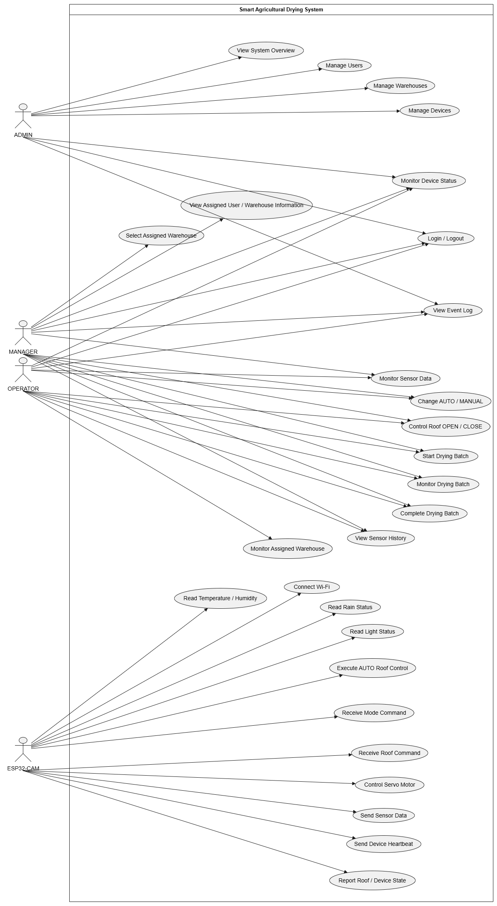
Figure 6.1. Use Case Diagram of the Smart Agricultural Drying System
The ADMIN is responsible for overall system administration, including user, warehouse, and device management. The MANAGER monitors and manages operations across authorized warehouses, while the OPERATOR performs daily drying activities at an assigned warehouse. Meanwhile, the ESP32-CAM is responsible for collecting sensor data, executing automatic roof control, receiving control commands, and exchanging information with the Java Web Server.
7System Architecture
The Smart Agricultural Drying System is designed using a multi-layer architecture that integrates IoT devices, a Java Web Server, a database, and a web-based user interface. This architecture enables environmental data to be collected from sensors, processed by the ESP32-CAM, transmitted to the server, and displayed on the dashboard. Additionally, user control commands can be transmitted in the opposite direction, from the web application to the physical device.
7.1 Overall System Architecture
The overall system architecture consists of five main architectural components: Physical Layer, Device Layer, Communication Layer, Application & Database Layer, and Presentation Layer. These layers work together to establish a complete workflow for data collection, processing, storage, monitoring, and control.
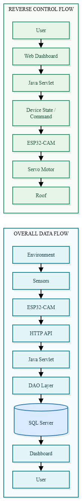
7.2 Architecture Layers
| Layer | Components | Main Responsibilities |
|---|---|---|
| Physical Layer | DHT11, Rain Sensor, LDR, Servo Motor | Collect environmental measurements and perform the physical opening and closing movements of the protective roof. |
| Device Layer | ESP32-CAM | Read sensor data, execute AUTO control logic, operate the servo motor, and communicate with the Java Web Server. |
| Communication Layer | Wi-Fi, HTTP, REST-like API | Transmit sensor readings, heartbeat signals, roof status updates, and control commands between the ESP32-CAM and Java Web Server. |
| Application Layer | Servlet, Controller, DAO, Filter | Process HTTP requests, validate access permissions, execute business logic, handle device control operations, and access application data. |
| Database Layer | Microsoft SQL Server | Store user, warehouse, device, sensor data, drying batch, and event log records. |
| Presentation Layer | JSP, JSTL, HTML, CSS, JavaScript | Display near real-time system information and provide user interfaces for monitoring, management, and roof control. |
7.3 Device and Physical Layer
The ESP32-CAM serves as the central hardware controller of the system. It receives data from environmental sensors and controls the protective roof through a servo motor.
| Component | Function |
|---|---|
| DHT11 | Measures ambient temperature and humidity. |
| Rain Sensor | Detects rainfall conditions and determines whether the status is RAINING or NO_RAIN. |
| LDR | Detects light conditions and determines whether the environment is BRIGHT or DARK. |
| Servo Motor | Performs the physical opening and closing movements of the protective roof. |
| ESP32-CAM | Reads sensor data, controls the servo motor, executes AUTO control logic, and communicates with the Java Web Server. |
7.4 Communication Architecture
The ESP32-CAM communicates with the Java Web Server through HTTP over a Wi-Fi network. The system provides dedicated API endpoints for sensor data transmission, device status synchronization, and dashboard data retrieval.
| API | Direction | Purpose |
|---|---|---|
/api/sensor
|
ESP32-CAM → Server | Transmits temperature, humidity, rainfall status, light status, and roof status to the server for storage in the SENSOR_DATA table. |
/api/device-state
|
ESP32-CAM ↔ Server | Updates heartbeat information and roof status while receiving control mode settings and roof commands from the server. |
/api/dashboard-data
|
Browser ← Server | Returns the latest system information for the Manager and Operator dashboards. |
/api/admin-dashboard-data
|
Browser ← Server | Provides the number of Online and Offline devices for the Admin Dashboard. |
7.5 Application Architecture
The Java Web application follows an architecture similar to the Model-View-Controller (MVC) pattern. JSP pages are responsible for presenting information to users, Servlets handle HTTP requests and business logic, and Data Access Objects (DAOs) manage communication with the database.
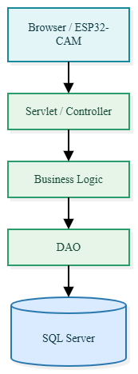
For user requests, the system validates the active session and user role before executing the requested functionality. For requests originating from the ESP32-CAM, the server receives device information, updates the database, and returns the appropriate device status or control commands when required.
7.6 Database Layer
Microsoft SQL Server is used to store management and operational data for the entire system. The database establishes relationships between users, warehouses, IoT devices, sensor readings, and drying batches to support system monitoring, data management, and operational traceability.
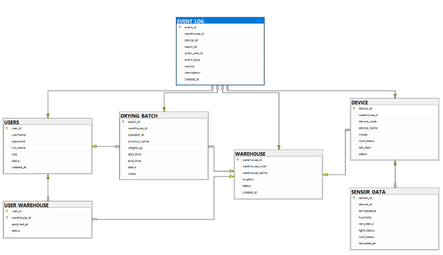
| Table | Purpose |
|---|---|
| USER | Stores user accounts, personal information, and assigned system roles. |
| WAREHOUSE | Stores information about agricultural drying warehouses and drying areas. |
| USER_WAREHOUSE | Manages the assignment of managers to authorized warehouses. |
| DEVICE | Stores IoT device information, control mode, roof status, last-seen timestamp, and operational status. |
| SENSOR_DATA | Stores timestamped temperature, humidity, rainfall status, light conditions, and roof status measurements. |
| DRYING_BATCH | Stores information and operational status of individual agricultural drying batches. |
| EVENT_LOG | Records significant system events and operational activities. |
7.7 Presentation Layer
The Presentation Layer provides role-based web interfaces that allow users to access system functions according to their assigned permissions.
| Role | Main Interfaces and Functions |
|---|---|
| ADMIN | System Overview, User Management, Warehouse Management, Device Management, and Event Log. |
| MANAGER | Warehouse Selection, Sensor Monitoring, Roof Control, Drying Batch Management, Sensor History, and Event Log. |
| OPERATOR | Assigned Warehouse Monitoring, Roof Control, Drying Batch Management, Sensor History, and Event Log. |
7.8 Data and Command Direction
The system supports two primary communication directions: data transmission from IoT devices to the server and control command transmission from users to physical devices. These communication processes are organized into three main flows.
| Flow | Direction | Purpose |
|---|---|---|
| Sensor Data Flow | Sensors → ESP32-CAM → Server → Database → Dashboard | Collects, stores, and displays environmental sensor data for system monitoring. |
| Device State Flow | ESP32-CAM → Server → DEVICE → Dashboard | Updates heartbeat information, roof status, and device Online/Offline connection status. |
| Control Command Flow | User → Dashboard → Server → ESP32-CAM → Servo | Transmits and executes roof control commands in MANUAL mode. |
8System Flow Analysis
This section describes the overall operational flow of the IoT-Based Smart Agricultural Drying System, from environmental data collection by the ESP32-CAM to data processing at the Java Web Server, storage in Microsoft SQL Server, and information display through the web-based user interface.
The system operates through two main communication flows: Data Flow and Control Flow. Data Flow transfers sensor information from IoT devices to users, while Control Flow transmits control commands from the Manager or Operator to the ESP32-CAM to operate the protective roof.
```html8.1 Overall End-to-End System Flow
The overall system flow describes the interaction among system users, the Web Application, Java Web Server, SQL Server Database, ESP32-CAM, sensors, and the roof actuator. The process begins when a user logs into the system. After successful authentication, the system displays the appropriate dashboard and functions according to the user's assigned role.
Admin users can manage system resources such as users, warehouses, and devices. Manager and Operator users can monitor environmental conditions, manage drying batches, view historical data and event logs, and control the drying roof according to their assigned permissions.
For environmental monitoring, the ESP32-CAM reads data from the DHT11, Rain Sensor, and LDR sensor. Sensor data is transmitted to the Java Web Server through HTTP APIs and stored in the SQL Server database. The Web Application retrieves the latest information from the server and displays it on the dashboard for realtime monitoring.
Roof control is performed in two operating modes. In AUTO mode, the ESP32-CAM automatically determines whether the roof should be opened or closed based on rain and light conditions. In MANUAL mode, Manager or Operator users send roof commands through the Web Application. The requested mode and roof state are stored on the server, and the ESP32-CAM periodically retrieves the latest control state through the device-state API before operating the servo motor.
In addition, the ESP32-CAM periodically sends heartbeat information to update the device's last communication time. This information is used by the system to determine whether the device is ONLINE or OFFLINE. Drying batch operations, sensor history, batch history, and event logs are also processed through the Java Web Server and stored in the corresponding database tables.
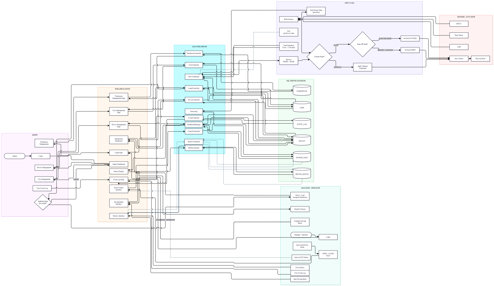
8.2 Automatic Roof Control Flow
In AUTO mode, the ESP32-CAM automatically determines the required roof position based on readings from the Rain Sensor and LDR sensor. If rainfall is detected or the surrounding environment becomes dark, the system automatically closes the protective roof. When no rainfall is detected and sufficient daylight is available, the system automatically opens the roof.
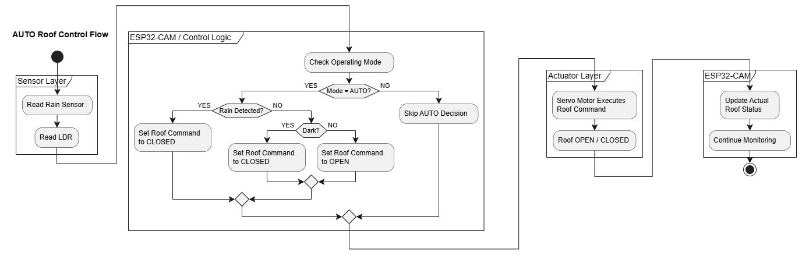
8.3 MANUAL Control Flow
In MANUAL mode, the Manager or Operator can select the desired roof state from the web application. The control request is processed by the Java Server, which updates the required device mode and roof status.
The ESP32-CAM periodically requests the current device state through
/api/device-state. After receiving the MANUAL mode and
the required roof command, the ESP32-CAM controls the Servo Motor
to open or close the roof and reports the actual roof status back to the server.
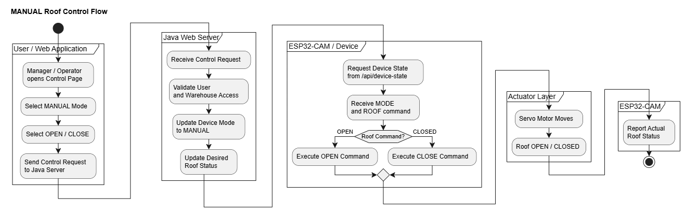
8.4 Device Heartbeat and Online/Offline Flow
The ESP32-CAM periodically sends heartbeat
signals to the Java Web Server to update
the device's last_seen timestamp.
If the server does not receive a heartbeat
from the device for more than 30 seconds,
the device is classified as OFFLINE.
Once heartbeat communication is restored,
the device status is updated to ONLINE.
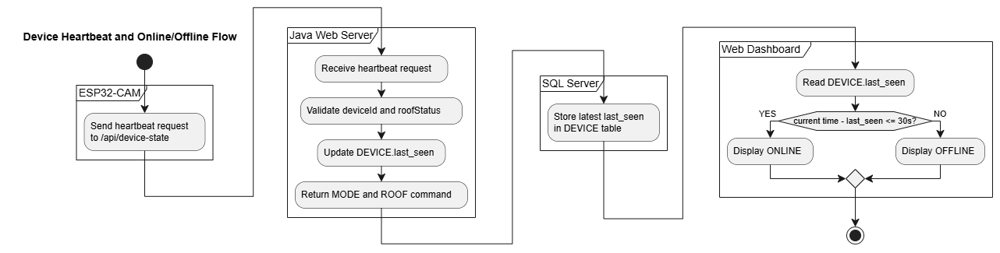
8.5 Real-Time Dashboard Update Flow
The web dashboard uses JavaScript to send periodic HTTP requests to the Java Web Server's API endpoints. The server retrieves the latest sensor readings and device information from the database and returns the requested data in JSON format. JavaScript then processes the response and dynamically updates the dashboard without requiring a full page reload.
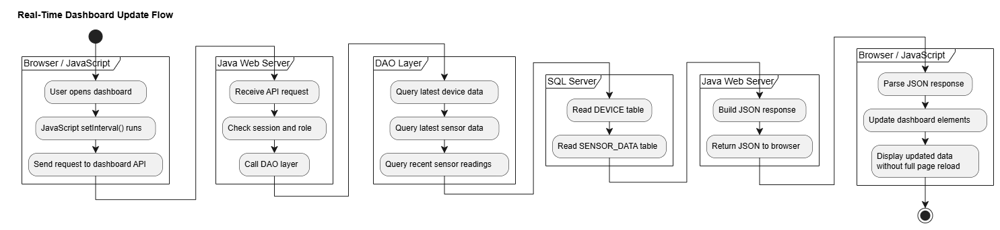
8.6 System Timing and Synchronization Policy
Different components of the system use different update intervals depending on their operational purpose. Device communication and dashboard monitoring require frequent updates, while historical sensor data is stored at a lower frequency to reduce unnecessary database writes.
| Function | Interval / Trigger | Purpose |
|---|---|---|
| ESP32 Device State / Heartbeat | Approximately every 2 seconds |
Updates last_seen, reports the physical roof state,
and retrieves the latest MODE and ROOF command.
|
| Sensor Data on Important State Change | Immediately | Sends new sensor data when an important environmental state changes, such as rain or light status. |
| Periodic Sensor Data Storage | Approximately every 5 minutes | Stores historical sensor data when no important state change occurs, avoiding unnecessary database inserts. |
| Manager / Operator Dashboard | Approximately every 2 seconds | Refreshes current sensor data, device state, roof status, operating mode, and warnings. |
| Admin Device Status | Approximately every 5 seconds | Refreshes Online and Offline device information. |
| Event Log | Approximately every 10 seconds | Refreshes newly recorded system events. |
| Sensor History | Approximately every 30 seconds | Refreshes historical sensor records without requiring a full page reload. |
| Device Offline Detection | No heartbeat for more than 30 seconds | Classifies the device as OFFLINE when communication is lost beyond the defined timeout. |
These intervals balance realtime monitoring requirements with communication and database efficiency. High-frequency updates are used for operational monitoring, while historical data is stored at a lower frequency.
9Hardware Design
| Component | Chức năng | Tín hiệu | Chân (ví dụ) |
|---|---|---|---|
| ESP32-CAM | Vi điều khiển, Wi-Fi, gửi HTTP | 3.3V logic | – |
| DHT11 | Nhiệt độ 0–50°C, độ ẩm 20–90% | Digital 1-wire | GPIO 14 |
| Rain Sensor | Phát hiện mưa | Digital (DO) | GPIO 13 |
| LDR | Phân biệt sáng/tối | Digital (DO qua so sánh) | GPIO 15 |
| Servo Motor | Đóng/mở mái che | PWM 50 Hz | GPIO 12 |
10Software Design
The Smart Agricultural Drying System is developed as a Java Web application using JSP, Servlet, JDBC, JavaScript, and SQL Server. The software is organized into separate components to reduce dependencies between the user interface, request processing, application data, and database access.
10.1 Java Web Application Structure
The Java Web application is organized into four main software components: View, Controller, Model, and Data Access. Each component has a specific responsibility and communicates with other components through a clearly defined structure.
10.1.1 View Layer
The View Layer is responsible for displaying system information and receiving user interactions. It is implemented using JSP, JSTL, HTML, CSS, and JavaScript.
JSP pages are stored under
/WEB-INF/views/,
which prevents users from accessing JSP files directly through a URL.
Instead, page requests must be processed through the corresponding
Servlet or Controller.
The main interfaces in the View Layer include:
- Admin Dashboard
- Manager Dashboard
- Operator Dashboard
- User Management
- Warehouse Management
- Device Management
- Drying Batch
- Sensor History
- Event Log
The View Layer does not directly execute SQL statements or communicate with the physical ESP32-CAM device. Its main responsibilities are displaying data, receiving user actions, submitting HTTP requests, receiving server responses, and updating page content.
10.1.2 Controller Layer
The Controller Layer is implemented using Java Servlet. Controllers receive requests from the browser or external devices, validate request information, communicate with DAO components, and determine the appropriate response.
The main responsibilities of the Controller Layer include:
- Receiving HTTP requests
- Checking the login session
- Checking the user role
- Reading request parameters
- Validating input data
- Calling DAO methods
- Processing returned results
- Returning JSP, text, or JSON responses
Controllers in the system can be divided into three main categories: Page Controllers, Action Controllers, and API Controllers.
Page Controllers
Page Controllers are used to load web pages.
Typical examples include:
/dashboard,
/history,
/events,
/users,
/warehouses,
and /devices.
Action Controllers
Action Controllers process user operations such as starting or completing a drying batch, changing the device mode, opening or closing the roof, and updating management data.
API Controllers
API Controllers are used when the response is not a complete JSP page.
Important API endpoints include
/api/sensor,
/api/device-state,
/api/dashboard-data,
and /api/admin-dashboard-data.
Depending on the API purpose, the response may be returned as text or JSON.
10.1.3 Model Layer
The Model Layer represents the main data objects used by the application. The primary model classes include User, Warehouse, Device, SensorData, DryingBatch, and EventLog.
Each model class contains properties corresponding to its system entity, together with constructors, getters, and setters. For example, the Device model stores information such as device ID, warehouse ID, device code, device name, operating mode, roof status, last seen time, and device status.
The SensorData model represents environmental readings including temperature, humidity, rain status, light status, roof status, and recorded time.
The Model Layer does not execute SQL queries. It is used to transfer structured data between DAO, Controller, and View components.
10.1.4 Data Access Layer
The Data Access Layer is implemented using the DAO pattern. The main DAO classes include UserDAO, WarehouseDAO, DeviceDAO, SensorDAO, DryingBatchDAO, and EventLogDAO.
DAO classes are responsible for executing SQL queries, inserting data, updating data, deleting data, retrieving data, and mapping database results to Model objects.
Database connections are created through JDBC and DBContext. This design keeps SQL logic out of Servlet classes and improves code readability, reusability, maintainability, and separation of concerns.
10.2 MVC Structure
The Smart Agricultural Drying System follows an MVC-oriented software structure to separate data representation, user interface, and request-processing responsibilities.
The system does not use a complete framework-based MVC architecture. Instead, the main responsibilities are organized using Model, View, and Controller components, while DAO classes support database access.
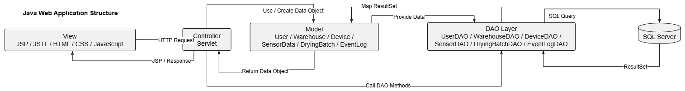
10.2.1 Model
The Model component represents the main data objects used by the application. The primary models include User, Warehouse, Device, SensorData, DryingBatch, and EventLog.
Model objects are used to transfer structured data between DAO classes, Controllers, and Views. They do not directly execute SQL queries or contain user-interface logic.
A typical data path is:
10.2.2 View
The View component represents the user interface of the system and is mainly implemented using JSP, JSTL, HTML, CSS, and JavaScript.
The View displays data received from the Controller, provides forms and controls for user interaction, sends requests to the server, and updates visible information on the page.
The View does not directly access SQL Server and does not directly control the physical ESP32-CAM device.
10.2.3 Controller
The Controller component is implemented using Java Servlet. It receives requests from the View or external devices, checks authentication and authorization, validates input data, communicates with DAO classes, and determines the appropriate response.
A typical request-processing sequence is:
This structure helps keep request-processing logic outside JSP pages and prevents the View from directly interacting with the database.
10.3 Role-Based Software Design
The system applies role-based access control to separate administrative and operational functions. The main permissions of each role are summarized in the table below.
| Function | Admin | Manager | Operator |
|---|---|---|---|
| System Overview | ✓ | ✓ | ✓ |
| Manage Users | ✓ | View Only | ✗ |
| Manage Warehouses | ✓ | Assigned / View Only | ✗ |
| Manage Devices | ✓ | ✗ | ✗ |
| Monitor Sensor Data | ✗ | ✓ | ✓ |
| Change AUTO / MANUAL Mode | ✗ | ✓ | ✓ |
| OPEN / CLOSE Roof | ✗ | ✓ | ✓ |
| Start Drying Batch | ✗ | ✓ | ✓ |
| Complete Drying Batch | ✗ | ✓ | ✓ |
| View Sensor History | ✗ | ✓ | ✓ |
| View Event Log | ✓ | ✓ | ✓ |
| Monitor Device Status | ✓ | ✓ | ✓ |
Access permissions are enforced by the backend Controller based on the authenticated user's role and assigned warehouse scope.
11Database Design
| Bảng | Trường chính | Quan hệ |
|---|---|---|
| USER | user_id, username, password_hash, role, status | N–N Warehouse qua USER_WAREHOUSE |
| WAREHOUSE | warehouse_id, name, location | 1–N Device, 1–N Drying_Batch |
| USER_WAREHOUSE | user_id, warehouse_id | Bảng trung gian phân công |
| DEVICE | device_id, code, warehouse_id, mode, roof_state, last_seen | 1–N Sensor_Data |
| SENSOR_DATA | id, device_id, temperature, humidity, rain, light, created_at | N–1 Device |
| DRYING_BATCH | batch_id, warehouse_id, product, start_time, end_time, status | N–1 Warehouse |
| EVENT_LOG | id, device_id, type, message, created_at | N–1 Device |
12System Testing
The Smart Agricultural Drying System was tested to verify the correctness of its main functions, user permissions, IoT device communication, roof control logic, realtime updates, and device connection monitoring.
The testing process focuses on comparing the expected result with the actual system behavior under different test conditions. Each test case includes the tested function, input condition, expected result, actual result, and final status.
12.1 Testing Approach
The system is evaluated using several testing categories, including functional testing, role-based authorization testing, AUTO and MANUAL roof control testing, realtime synchronization testing, device online/offline testing, and end-to-end integration testing.
Testing is performed on both the Java Web application and the ESP32-CAM hardware to ensure that software and hardware components operate correctly as an integrated system.
12.2 Functional Testing
Functional testing is performed to verify that the main system features operate according to the defined requirements. Each test case compares the expected result with the actual behavior of the implemented system.
| Test ID | Function | Test Procedure | Expected Result | Actual Result | Status |
|---|---|---|---|---|---|
| FT-01 | Login | Enter a valid username and password, then submit the login form. | The user is authenticated and redirected to the dashboard corresponding to the assigned role. | The user successfully logs in and is redirected to the correct dashboard. | Pass |
| FT-02 | Logout | Select the Logout function after logging in. | The current session is invalidated and the user is redirected to the login page. | The session is cleared and the login page is displayed. | Pass |
| FT-03 | View Dashboard | Log in as Manager or Operator and open the dashboard. | The dashboard displays the assigned warehouse, device information, and latest sensor data. | The required monitoring information is displayed correctly. | Pass |
| FT-04 | Change Device Mode | Change the operating mode from AUTO to MANUAL or from MANUAL to AUTO. | The selected mode is updated in the system and returned to the ESP32-CAM. | The device mode is updated successfully. | Pass |
| FT-05 | Manual Roof Control | Set the device to MANUAL mode and select OPEN or CLOSE. | The selected roof command is stored by the server, received by the ESP32-CAM, and executed by the Servo Motor. | The roof responds according to the selected command. | Pass |
| FT-06 | Start Drying Batch | Enter the required batch information and select Start Batch. | A new drying batch is created with an active status. | The drying batch is created successfully. | Pass |
| FT-07 | Complete Drying Batch | Select an active drying batch and perform the Complete action. | The selected batch is completed and its completion information is stored. | The batch status is updated successfully. | Pass |
| FT-08 | View Batch History | Open the Batch History page after one or more drying batches have been completed. | Completed drying batches are retrieved and displayed with their recorded information. | Batch history is displayed correctly. | Pass |
| FT-09 | View Sensor History | Open the Sensor History page for the assigned warehouse. | Previously stored sensor records are displayed in chronological order. | Sensor history is displayed correctly. | Pass |
| FT-10 | View Event Log | Open the Event Log page. | Recorded system events are retrieved and displayed to the authorized user. | Event records are displayed successfully. | Pass |
| FT-11 | User Management | Log in as Admin and perform user management operations. | Admin can view, create, update, delete or manage user information according to the system design. | User management functions operate correctly. | Pass |
| FT-12 | Warehouse Management | Log in as Admin and perform warehouse management operations. | Warehouse information can be managed and stored correctly. | Warehouse management functions operate correctly. | Pass |
| FT-13 | Device Management | Log in as Admin and perform device management operations. | Device information can be created, updated, viewed, deleted and managed correctly. | Device management functions operate correctly. | Pass |
The functional testing results show that the main web-based management and operational functions are able to perform their intended tasks under normal operating conditions.
12.3 Role and Authorization Testing
Role and authorization testing is performed to verify that each user can only access functions and warehouse data according to the assigned role and access scope.
The testing also checks whether unauthorized access attempts, such as changing a URL or request parameter, are correctly blocked by the backend.
| Test ID | Role | Test Procedure | Expected Result | Actual Result | Status |
|---|---|---|---|---|---|
| RA-01 | Admin | Access User Management. | Admin is allowed to access and manage user information. | User Management is accessible and functions correctly. | Pass |
| RA-02 | Admin | Access Warehouse Management. | Admin is allowed to access and manage warehouse information. | Warehouse Management is accessible and functions correctly. | Pass |
| RA-03 | Admin | Access Device Management. | Admin is allowed to access and manage device information. | Device Management is accessible and functions correctly. | Pass |
| RA-04 | Admin | Attempt to access operational roof control by entering the control URL directly. | Admin is not allowed to perform operational roof control functions. | Unauthorized operational access is prevented. | Pass |
| RA-05 | Manager | Select a warehouse assigned to the current Manager. | The selected warehouse dashboard and related data are loaded successfully. | The assigned warehouse data is displayed correctly. | Pass |
| RA-06 | Manager | Modify the warehouseId in the request to an unassigned warehouse. | Unauthorized warehouse access is rejected and the Manager remains on the previously authorized warehouse dashboard. | The unauthorized warehouse is not loaded and the current authorized dashboard remains displayed. | Pass |
| RA-07 | Manager | Change AUTO / MANUAL mode in an assigned warehouse. | Manager is allowed to change the operating mode for an assigned warehouse. | The device mode is updated successfully. | Pass |
| RA-08 | Manager | Start and complete a drying batch in an assigned warehouse. | Manager is allowed to perform drying batch operations. | Batch operations are completed successfully. | Pass |
| RA-09 | Manager | Attempt to access Device Management. | Manager is not allowed to access Device Management. | Access is prevented. | Pass |
| RA-10 | Operator | Access the assigned warehouse dashboard. | Operator can access only the assigned warehouse. | The assigned warehouse is loaded correctly. | Pass |
| RA-11 | Operator | Attempt to access data from another warehouse. | Access to other warehouse data is rejected. | The Operator cannot access another warehouse. | Pass |
| RA-12 | Operator | Change device mode and perform OPEN / CLOSE roof control in the assigned warehouse. | Operator is allowed to perform operational control within the assigned warehouse. | Operational controls function correctly. | Pass |
| RA-13 | Operator | Start and complete a drying batch in the assigned warehouse. | Operator is allowed to manage drying batches in the assigned warehouse. | Batch operations function correctly. | Pass |
| RA-14 | Operator | Attempt to access User Management, Warehouse Management, or Device Management. | Operator is not allowed to access administrative management functions. | Administrative access is prevented. | Pass |
| RA-15 | Unauthenticated User | Access a protected URL without logging in. | The user is redirected to the login page . | Protected pages cannot be accessed without authentication. | Pass |
| RA-16 | Authenticated User | Log out and then attempt to access a previously protected URL. | The previous session is no longer valid and the user must log in again. | The user is redirected to the login page. | Pass |
The authorization testing results show that access permissions are enforced according to both user roles and assigned warehouse scope. Unauthorized requests do not expose data or functions outside the user's permitted access range.
12.4 AUTO Control Testing
AUTO control testing is performed to verify that the ESP32-CAM automatically determines the correct roof state based on rain and light conditions.
In AUTO mode, the expected control rule is: rain or dark conditions cause the roof to close, while no rain and bright conditions cause the roof to open.
| Test ID | Rain Status | Light Status | Expected Roof Status | Actual Result | Status |
|---|---|---|---|---|---|
| AT-01 | NO_RAIN | BRIGHT | OPEN | The servo opens the roof. | Pass |
| AT-02 | RAINING | BRIGHT | CLOSED | The servo closes the roof. | Pass |
| AT-03 | NO_RAIN | DARK | CLOSED | The servo closes the roof. | Pass |
| AT-04 | RAINING | DARK | CLOSED | The servo closes the roof. | Pass |
| AT-05 | NO_RAIN | BRIGHT | Roof remains OPEN while the environment continues to satisfy the AUTO opening condition. | The roof remains open without unnecessary repeated movement. | Pass |
| AT-06 | State changes from NO_RAIN to RAINING | BRIGHT | The ESP32-CAM detects the changed condition and closes the roof. | The roof changes from OPEN to CLOSED. | Pass |
| AT-07 | NO_RAIN | State changes from BRIGHT to DARK | The ESP32-CAM detects the dark condition and closes the roof. | The roof changes from OPEN to CLOSED. | Pass |
| AT-08 | State changes from RAINING to NO_RAIN | BRIGHT | The ESP32-CAM re-evaluates the AUTO condition and opens the roof. | The roof changes from CLOSED to OPEN. | Pass |
The AUTO control test results show that the roof responds correctly to changes in rain and light conditions. The ESP32-CAM performs the control decision locally and updates the actual roof state after servo movement.
12.5 MANUAL Control Testing
MANUAL control testing is performed to verify that Manager and Operator can manually control the roof through the web application when the device is operating in MANUAL mode.
The test focuses on whether the selected OPEN or CLOSE command
is correctly processed by the Java Web Server,
retrieved by the ESP32-CAM through
/api/device-state,
and executed by the Servo Motor.
| Test ID | Initial Condition | Test Procedure | Expected Result | Actual Result | Status |
|---|---|---|---|---|---|
| MT-01 | Device is in AUTO mode | Manager or Operator changes the operating mode from AUTO to MANUAL. | The device mode is updated to MANUAL and returned to the ESP32-CAM. | The device successfully changes to MANUAL mode. | Pass |
| MT-02 | MANUAL mode, roof CLOSED | Select OPEN from the web application. | The server updates the desired roof status to OPEN. The ESP32-CAM receives the command and opens the roof. | The Servo Motor moves and the roof changes to OPEN. | Pass |
| MT-03 | MANUAL mode, roof OPEN | Select CLOSE from the web application. | The server updates the desired roof status to CLOSED. The ESP32-CAM receives the command and closes the roof. | The Servo Motor moves and the roof changes to CLOSED. | Pass |
| MT-04 | MANUAL mode, roof already OPEN | Select OPEN again. | The roof remains OPEN and no unnecessary opposite movement occurs. | The roof remains in the OPEN state. | Pass |
| MT-05 | MANUAL mode, roof already CLOSED | Select CLOSE again. | The roof remains CLOSED and no unnecessary opposite movement occurs. | The roof remains in the CLOSED state. | Pass |
| MT-06 | MANUAL mode | Change the rain or light sensor condition while keeping the device in MANUAL mode. | Sensor changes do not override the user-selected manual roof command. | The roof remains controlled by the MANUAL command. | Pass |
| MT-07 | MANUAL mode | Send an OPEN or CLOSE command and observe the device state returned through the next device-state request. | The ESP32-CAM receives the latest MODE and ROOF command from the Java Server. | The latest control command is received correctly. | Pass |
| MT-08 | MANUAL mode after roof movement | Observe the reported roof status after the Servo Motor completes the movement. | The actual roof status is reported and synchronized with the server. | The reported roof status matches the physical roof state. | Pass |
The MANUAL control test results show that authorized users can control the roof through the web application and that the ESP32-CAM correctly executes the latest server-side roof command while operating in MANUAL mode.
12.6 Realtime and Synchronization Testing
Realtime and synchronization testing is performed to verify that device status, sensor information, control commands, and monitoring data are updated correctly between the ESP32-CAM, Java Web Server, database, and web interface.
Different components use different update intervals depending on their purpose. Fast-changing operational information is refreshed frequently, while historical sensor records are stored less frequently to avoid unnecessary database writes.
| Test ID | Component | Test Procedure | Expected Result | Actual Result | Status |
|---|---|---|---|---|---|
| RT-01 | Device State / Heartbeat |
Keep the ESP32-CAM connected
and observe requests to
/api/device-state.
|
The ESP32-CAM periodically sends device-state requests at approximately 2-second intervals. | Device-state communication is maintained at approximately the expected interval. | Pass |
| RT-02 | Manager / Operator Dashboard | Open the dashboard and observe sensor and device information while the system is running. | The dashboard requests updated data approximately every 2 seconds without requiring a full page reload. | Dashboard information is refreshed dynamically at approximately 2-second intervals. | Pass |
| RT-03 | Sensor State Change | Change an important sensor state, such as NO_RAIN to RAINING or BRIGHT to DARK. |
The ESP32-CAM sends sensor data
to /api/sensor immediately
after detecting the important state change.
|
The changed sensor state is sent to the server without waiting for the periodic storage interval. | Pass |
| RT-04 | Periodic Sensor Storage | Keep sensor conditions stable without any important state changes. | Sensor data is not inserted every 2 seconds. A periodic sensor record is sent approximately every 5 minutes. | Sensor history is stored periodically without unnecessary high-frequency inserts. | Pass |
| RT-05 | Admin Device Status | Open the Admin Dashboard and observe Online / Offline device counts. | The Admin Dashboard refreshes device connection information approximately every 5 seconds. | Online / Offline counts are updated at approximately the expected interval. | Pass |
| RT-06 | Event Log | Open the Event Log page and create a new system event. | The Event Log is refreshed approximately every 10 seconds without a full page reload. | New event information appears after the periodic refresh. | Pass |
| RT-07 | Sensor History | Open the Sensor History page while new sensor records are being stored. | Sensor History is refreshed approximately every 30 seconds. | Newly stored sensor records are displayed after the periodic history refresh. | Pass |
| RT-08 | Manual Command Synchronization | Change the roof command from the web application while the device is in MANUAL mode. | The new desired roof state is stored on the server and received by the ESP32-CAM through the next device-state request. | The ESP32-CAM receives and executes the latest roof command. | Pass |
| RT-09 | Physical Roof Status Synchronization | Perform an OPEN or CLOSE command and observe the server and dashboard after the Servo Motor completes movement. | The actual physical roof state is reported by the ESP32-CAM and displayed consistently on the dashboard. | The displayed roof status matches the physical roof state. | Pass |
| RT-10 | Device Offline Detection | Disconnect the ESP32-CAM from Wi-Fi or power and stop heartbeat communication. | If no heartbeat is received for more than 30 seconds, the device is classified as OFFLINE. | The device status changes to OFFLINE after the heartbeat timeout. | Pass |
| RT-11 | Device Reconnection | Reconnect the ESP32-CAM after it has been detected as OFFLINE. | When heartbeat communication resumes, the device is classified as ONLINE again. | The device status returns to ONLINE after heartbeat communication is restored. | Pass |
The realtime and synchronization testing results show that the system maintains frequent device communication and responsive dashboard updates while avoiding unnecessary high-frequency sensor history storage. Control commands and physical device states remain synchronized between the web application and the ESP32-CAM.
12.7 End-to-End Testing
End-to-end testing is performed to verify that the hardware, Java Web application, database, and user interface work correctly as one integrated system.
The test scenarios focus on complete operational flows rather than individual functions.
| Test ID | Scenario | Test Procedure | Expected Result | Actual Result | Status |
|---|---|---|---|---|---|
| E2E-01 | Rain Detection in AUTO Mode | Set the device to AUTO mode, keep the environment bright, and trigger the rain sensor. | The ESP32-CAM detects RAINING, closes the roof, sends the updated sensor state to the server, stores the data, and the dashboard displays RAINING and CLOSED. | Rain status and roof status are updated correctly from the physical device to the web interface. | Pass |
| E2E-02 | Automatic Roof Opening | Keep the device in AUTO mode, remove the rain condition, and provide a BRIGHT light condition. | The ESP32-CAM evaluates NO_RAIN and BRIGHT, opens the roof, updates the actual roof status, and the web dashboard displays OPEN. | The roof opens and the displayed state matches the physical roof state. | Pass |
| E2E-03 | Manual Roof Control | Log in as Manager or Operator, switch the device to MANUAL mode, and select OPEN or CLOSE. | The control request is processed by the Java Server, the ESP32-CAM retrieves the latest MODE and ROOF command, the Servo Motor executes the command, and the actual roof state is reported back. | The physical roof follows the command selected from the web application. | Pass |
| E2E-04 | Device Offline and Reconnection | Disconnect the ESP32-CAM until the heartbeat timeout is exceeded, then reconnect the device. | The device becomes OFFLINE after more than 30 seconds without heartbeat and returns to ONLINE after communication is restored. | The web application reflects both offline and reconnection states correctly. | Pass |
| E2E-05 | Drying Batch Lifecycle | Log in as Manager or Operator, start a new drying batch, monitor the active batch, and complete it. | The batch is created as active, can be monitored during operation, changes to completed status, and remains available in Batch History. | The complete drying batch lifecycle operates correctly. | Pass |
| E2E-06 | Sensor Data Monitoring | Change environmental conditions while the Manager or Operator dashboard is open. | Important sensor state changes are sent to the server, stored when required, and displayed on the dashboard through periodic realtime updates. | The dashboard reflects the latest environmental and device information correctly. | Pass |
The end-to-end testing results show that the main hardware and software components can operate together as an integrated system. Sensor information can travel from the physical environment to the web interface, while authorized control commands can travel from the web application back to the ESP32-CAM and physical roof mechanism.
12.8 Testing Summary
The system was evaluated through functional, authorization, automatic control, manual control, realtime synchronization, and end-to-end testing. The tests cover both the Java Web application and the ESP32-CAM hardware integration.
| Testing Category | Number of Test Cases | Passed | Failed |
|---|---|---|---|
| Functional Testing | 13 | 13 | 0 |
| Role and Authorization Testing | 16 | 16 | 0 |
| AUTO Control Testing | 8 | 8 | 0 |
| MANUAL Control Testing | 8 | 8 | 0 |
| Realtime and Synchronization Testing | 11 | 11 | 0 |
| End-to-End Testing | 6 | 6 | 0 |
| Total | 62 | 62 | 0 |
The testing results indicate that the implemented prototype satisfies the main functional and integration requirements within the defined project scope. Core functions including role-based access, sensor monitoring, AUTO and MANUAL roof control, realtime synchronization, device connection monitoring, and drying batch management operate as expected.
13User Guide
This section provides basic instructions for accessing and operating the Smart Agricultural Drying System. The guide is organized according to the three system roles: Admin, Manager, and Operator.
Each role has a different set of available functions. Users should log in using an account assigned to the appropriate role before performing system operations.
13.1 System Access and Login
To access the system, open the Smart Agricultural Drying System web application in a supported web browser. The Login page requires a valid username and password.
- Open the system Login page.
- Enter a valid username.
- Enter the corresponding password.
- Click the Login button.
- After successful authentication, the system redirects the user to the dashboard corresponding to the assigned role.

13.2 Demo Accounts
The following active accounts can be used to demonstrate the main functions of each system role.
| Role | Username | Password | Access Scope |
|---|---|---|---|
| Admin | admin01 | 123456 | Full system administration |
| Manager | manager01 | 123456 | Assigned warehouses |
| Operator | operator01 | 123456 | Assigned warehouse |
13.3 Admin User Guide
Admin is responsible for managing the main system resources and monitoring the overall system status.

- Log in using an Admin account.
- Open the Admin Dashboard to view the system overview.
- Use User Management to manage system users.
- Use Warehouse Management to manage warehouses.
- Use Device Management to manage registered devices.
- View Online / Offline device information from the dashboard.
- Open Event Log to review recorded system events.
- Use Logout when system administration is completed.
13.4 Manager User Guide
Manager can monitor and operate the warehouses assigned to the current account.

- Log in using a Manager account.
- Select one of the assigned warehouses.
- Monitor temperature, humidity, rain, light, roof, and device status.
- Select AUTO or MANUAL operating mode.
- In MANUAL mode, select OPEN or CLOSE to control the roof.
- Start a new drying batch when required.
- Monitor active drying batches.
- Complete a drying batch when the process is finished.
- View Batch History and Sensor History.
- View Event Log for system activities.
13.5 Operator User Guide
Operator is assigned to one warehouse and performs day-to-day drying operations.

- Log in using an Operator account.
- The system automatically loads the assigned warehouse.
- Monitor current sensor and device information.
- Select AUTO or MANUAL mode when permitted.
- In MANUAL mode, use OPEN or CLOSE to control the roof.
- Start a drying batch.
- Monitor the active drying batch.
- Complete the batch when the drying process is finished.
- View Batch History and Sensor History.
- View Event Log when required.
13.6 Operating Notes
- AUTO mode automatically controls the roof based on rain and light conditions.
- MANUAL mode allows Manager or Operator to select OPEN or CLOSE from the web interface.
- If the ESP32-CAM does not send a heartbeat for more than 30 seconds, the device is displayed as OFFLINE.
- Manager can only access warehouses assigned to the current account.
- Operator can only operate the warehouse assigned to the current account.
- Dashboard information is updated automatically and normally does not require a full page reload.
- Sensor History is not stored every 2 seconds. Important sensor state changes are sent immediately, while unchanged sensor data is stored periodically.
14Results
Event Log mẫu
| Thời gian | Device | Sự kiện | Chi tiết |
|---|---|---|---|
| 13:42:10 | DRY-01 | Rain Detected | Mái chuyển OPEN → CLOSED |
| 14:05:33 | DRY-01 | Roof Opened | Hết mưa, trời sáng (AUTO) |
| 14:20:00 | DRY-01 | High Temperature | Nhiệt độ vượt ngưỡng cấu hình |
| 15:02:48 | DRY-02 | Device Offline | Quá 30 giây không có dữ liệu |
15Limitations
Although the Smart Agricultural Drying System successfully integrates environmental monitoring, automatic roof control, manual operation, database storage, and web-based management, the current implementation still has several limitations due to the prototype scope of the project.
15.1 Sensor Accuracy
The system uses DHT11, Rain Sensor, and LDR modules for environmental monitoring. These sensors are suitable for demonstration purposes, but their accuracy and stability are lower than industrial-grade sensors. In particular, the LDR is currently used mainly to classify light conditions as BRIGHT or DARK rather than measure precise light intensity.
15.2 Prototype Roof Mechanism
The roof mechanism is simulated using a Servo Motor. This setup is appropriate for a small prototype, but it does not represent the mechanical load and durability requirements of a real agricultural drying roof.
The current prototype does not evaluate factors such as motor torque, waterproofing, mechanical wear, emergency stop mechanisms, or backup power.
15.3 Wi-Fi and Network Dependency
Communication between the ESP32-CAM and the Java Web Server depends on Wi-Fi connectivity. If the network connection is interrupted, new sensor information cannot be synchronized to the server and MANUAL commands from the web application cannot reach the device.
However, AUTO control can still continue locally on the ESP32-CAM because the automatic roof decision is performed directly on the device.
15.4 HTTP-Based IoT Communication
The current system uses HTTP requests for device communication, including sensor data transmission, heartbeat updates, and control-state synchronization. This approach is simple and suitable for the current prototype, but may become less efficient when the number of devices or warehouses is significantly increased.
15.5 Limited Environmental Control
The current system only controls the roof mechanism. Other environmental control devices such as fans, heaters, dehumidifiers, or industrial drying equipment are not included in the current project scope.
15.6 Limited Notification Capability
The web application can display warnings and system events, but external notification channels are still limited. The current prototype does not provide a complete mobile application or multi-channel alert system for users outside the web interface.
15.7 Prototype Deployment Environment
The Java Web application and SQL Server database are currently deployed in a local development and demonstration environment. The system has not yet been evaluated under long-term cloud deployment, unstable public networks, or large-scale production conditions.
15.8 Limited Physical Device Scale
The prototype is currently demonstrated with a limited number of physical IoT devices. Although the software architecture supports multiple warehouses and devices, large-scale multi-device deployment has not yet been fully tested in a real environment.
16Future Improvements
Based on the current limitations of the prototype, several enhancements can be considered for future development to improve system reliability, scalability, and practical applicability.
16.1 Upgrade Sensor Hardware
The current DHT11, Rain Sensor, and LDR modules can be replaced with higher-precision, industrial-grade sensors better suited for harsh agricultural environments.
In particular, the light sensing module can be upgraded from a simple binary classification (BRIGHT / DARK) to a precise illuminance measurement (Lux).
16.2 Improve the Roof Actuation Mechanism
The prototype Servo Motor can be replaced with higher-torque motors or heavy-duty linear actuators capable of driving real-world outdoor roof structures. Future implementations should also address mechanical limits, position feedback, waterproofing standards, and emergency override protections.
16.3 Improve IoT Communication
The current HTTP-based communication can be upgraded or combined with MQTT in future versions. MQTT will offer significantly higher network efficiency, lower latency, and reduced bandwidth overhead when multiple devices and warehouses operate concurrently.
16.4 Cloud Deployment
The Java Web application and database can be deployed to a cloud platform (e.g., Cloud VPS/Server) to enable secure remote access from any geographical location.
Cloud deployment would also streamline centralized multi-warehouse management without relying on local network configurations.
16.5 Expand Multi-Device and Multi-Warehouse Support
Although the software architecture natively supports multiple warehouses and devices, future phases should focus on stress-testing the system with a higher density of physical ESP32-CAM units operating simultaneously.
16.6 External Notification Integration
The system can be integrated with external messaging services such as Telegram Bot or SMS gateways to deliver instant alerts for critical events.
Key notification triggers include:
- Rain detection events
- High-temperature thresholds
- Low-temperature thresholds
- Device offline status
16.7 Additional Environmental Control Devices
Future iterations can integrate auxiliary hardware components such as ventilation fans, heating elements, or dehumidifiers to provide comprehensive microclimate control throughout the drying process.
16.8 Weather Forecast Integration
Integrating third-party weather forecast APIs can provide predictive insights to assist operators in proactive decision-making. However, local real-time sensor data will remain the primary trigger for instant roof actuation.
16.9 Data Analytics and Decision Support
Historical sensor data and drying batch records can be leveraged for in-depth data analytics. The system can evaluate correlations between temperature, humidity, and drying duration to help optimize overall operational efficiency.
More advanced predictive models or recommendation algorithms can be considered in future releases once a sufficient volume of field data has been collected.
17Conclusion
The Smart Agricultural Drying System was developed to support the monitoring and control of agricultural drying conditions through the integration of IoT hardware and a Java Web application.
The system successfully combines ESP32-CAM, DHT11, Rain Sensor, LDR, and Servo Motor with a Java Web platform using JSP, Servlet, JDBC, JavaScript, and SQL Server. Environmental data can be collected from the physical device, transmitted to the server, stored in the database, and displayed through the web interface.
The implemented prototype supports both AUTO and MANUAL roof control. In AUTO mode, the ESP32-CAM automatically opens or closes the roof based on rain and light conditions. In MANUAL mode, authorized Manager and Operator users can control the roof through the web application.
The system also provides role-based access for Admin, Manager, and Operator, together with functions for warehouse management, device management, drying batch management, sensor history, event logging, realtime monitoring, and device Online / Offline detection.
Through system testing, the main hardware and software components were shown to operate together as an integrated prototype. Sensor information can move from the physical environment to the monitoring interface, while control commands can be sent from authorized users back to the ESP32-CAM and roof mechanism.
Overall, the project demonstrates the feasibility of applying IoT and Java Web technologies to reduce manual monitoring in agricultural drying activities. Although the current system is still a prototype, it provides a suitable foundation for future improvements such as higher-accuracy sensors, cloud deployment, MQTT communication, external notifications, and larger multi-device implementations.